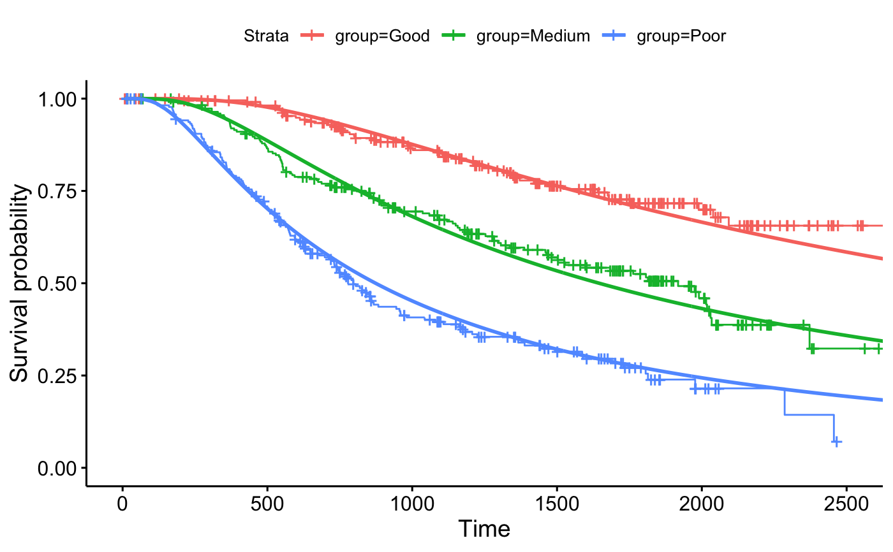

Create ggplot2-based graphs for flexible survival models.
ggflexsurvplot( fit, data = NULL, fun = c("survival", "cumhaz"), summary.flexsurv = NULL, size = 1, conf.int = FALSE, conf.int.flex = conf.int, conf.int.km = FALSE, legend.labs = NULL, ... )
| fit | an object of class |
|---|---|
| data | the data used to fit survival curves. |
| fun | the type of survival curves. Allowed values include "survival" (default) and "cumhaz" (for cumulative hazard). |
| summary.flexsurv | (optional) the summary of the |
| size | line size for the flexible survival estimates. |
| conf.int, conf.int.flex | logical. If TRUE, add confidence bands for flexible survival estimates. |
| conf.int.km | same as |
| legend.labs | character vector specifying legend labels. Used to replace the names of the strata from the fit. Should be given in the same order as those strata. |
| ... | additional arguments passed to the function |
a ggsurvplot
# \donttest{ if(require("flexsurv")) { fit <- flexsurvreg(Surv(rectime, censrec) ~ group, dist = "gengamma", data = bc) ggflexsurvplot(fit) }#># }